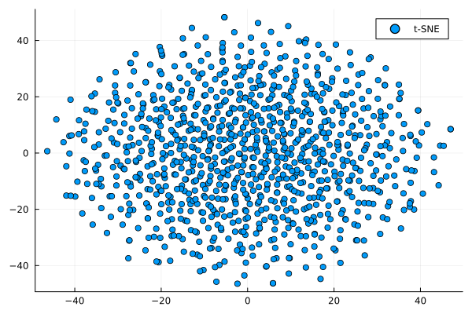
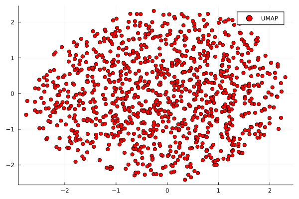
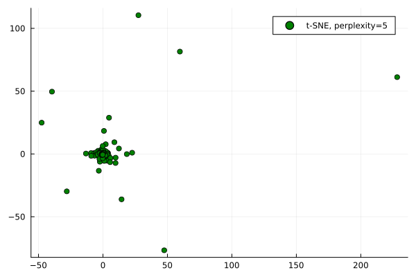
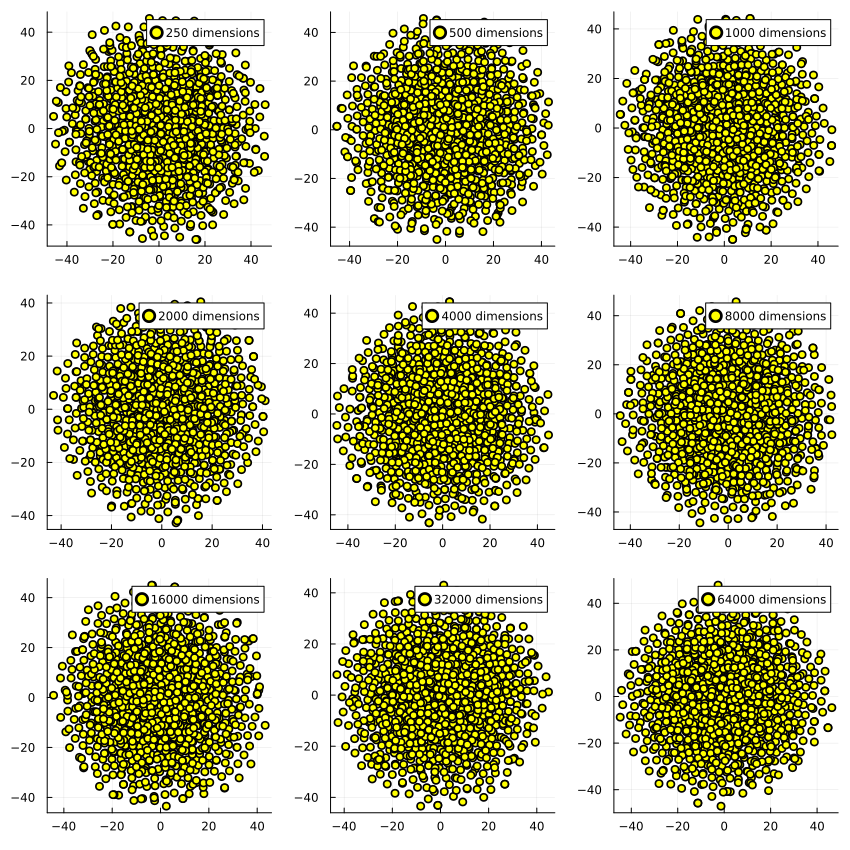
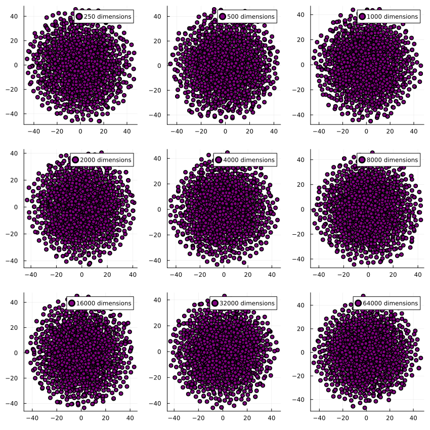
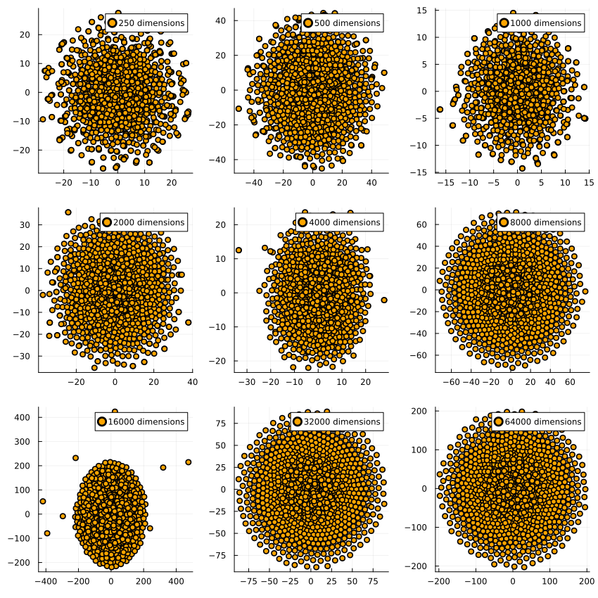
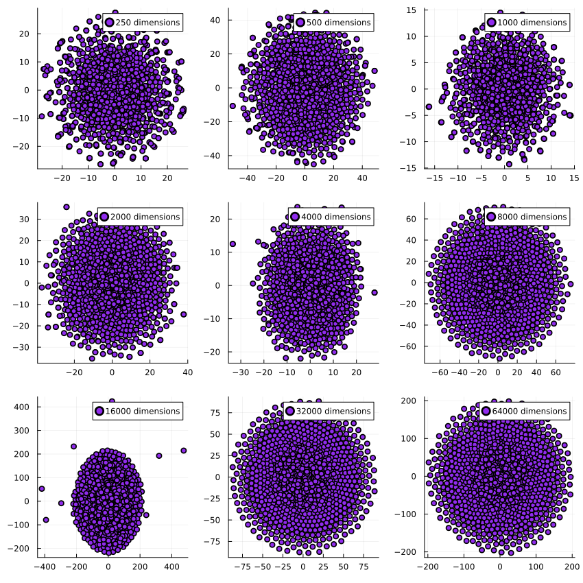

author: niplav, created: 2024-06-27, modified: 2024-12-19, language: english, status: finished, importance: 4, confidence: certain
Randomness revived, structure banished, outliers observed, perplexity examined, and scatterplots produced; all to the discerning enjoyment of the nobly dimensionality-reduction-interested reader, and for the general betterment of public knowledge; be it machinic or biological in nature.
Every once in a while, my corner of 𝕏 erupts in discussion about dimensionality reduction techniques, usually in the context of some paper which visualizes high-dimensional data and clearly shows clusters in the visualization. (Often, this has to do with discussions about race or gender 🙄)
A common claim in those discussions is that dimensionality reduction techniques like t-SNE or UMAP tend to find clusters in random data, even if they're not really present.
I think this is wrong in the strict sense with unimodal distributions, although it's sometimes correct in the case of multimodal or more structured distributions. I'll generate 10k 2k-dimensional uniformly distributed samples, reduce them down to 2 dimensions, and plot the result (code here in Julia):
using TSne, UMAP, Plots
datapoints=1000
dims=200
data=rand(datapoints, dims)
reduced=tsne(data)
reduced_umap=umap(transpose(data))
gui(scatter(reduced[:,1],reduced[:,2]))

gui(scatter(reduced_umap[1,:],reduced_umap[2,:], color=:red))

Changing the perplexity to 5 (default is 30 for t-SNE) changes the clustering produced — no obvious clustering, but it leads to structure being hallucinated, especially the tendency towards identifying a cross-shaped pattern in the data, and imagining outliers where they don't exist.
reduced_5=tsne(data, 2, 0, 1000, 5.0)
gui(scatter(reduced_5[:,1],reduced_5[:,2], color=:green))

But—what if we have more dimensions than datapoints? Surely it hallucinates structure in that case‼

(In all cases with 1000 datapoints.)
And the same for UMAP:

quetzal_rainbow suggested I test it with data where half the dimensions are normally distributed and the other half is lognormally distributed. Intuitively, the resulting dataset has the shape of a skewed hyperegg, in which for half the dimensions the cross-section is spherical and for the other half they extend much further in one direction than the other.
When reducing the dimensions, we see this for t-SNE on 1000 datapoints each:

And similarly for UMAP:

The dimensionality reduction algorithms get executed on the same dataset per dimensionality, which is why they have very similar outputs for e.g. 16k dimensions: The generated dataset has a few outliers which end up far away from the center of the dataset, and both t-SNE and UMAP pick up on that. I find it pretty encouraging to see how two very different algorithms find the same structure in the data.
A steelmanned critique of these two algorithms could be that sometimes people use dimensionality reduction techniques for clustering, instead of separating visualization and clustering (such as via good ol' k-means), allegedly t-SNE is sometimes used even for clustering. I don't think that's a good idea, and propose the following slogan as an alternative:
Clustering first, dimensionality reduction second.
Since:
Cluster sizes in a t-SNE plot mean nothing […] The basic message is that distances between well-separated clusters in a t-SNE plot may mean nothing.
—Fernanda Viegas/Ian Johnson/Martin Wattenberg, “How to Use t-SNE Effectively”, 2016